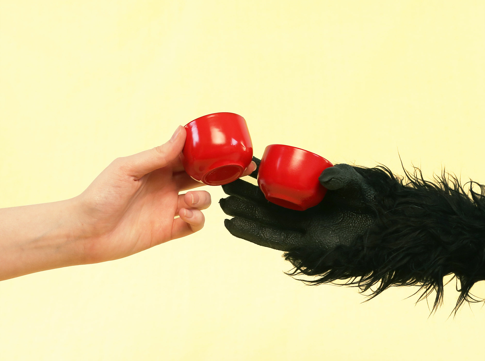
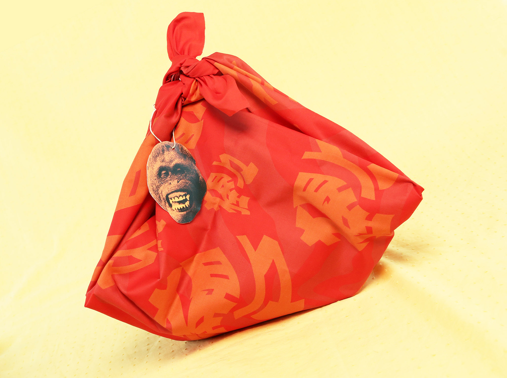

Shōjō Sake
Packaging
Along the mountainous coasts of Japan lives a race of ape-like, intelligent, red-haired sea spirits known as shōjō. Shōjō spend their lives playing in the sea and on the sand, drinking large quantities of alcohol. They revel in drunken silliness, singing, dancing, and enjoying life."
An imagined brand of genshu sake centered around the myth of the Japanese shōjō, named after said creature.

As a contrast between the old and the modern, the image of the shōjō is depicted by an orangutan dressed as a Japanese salaryman, as salarymen can often be found red-faced and drunk around train stations.
Warped red lines fan out from behind the ape as a reference to the symbolic crazy red hair of the shōjō as well as convey drunken stupor.
Included in a gift set is a set of sake cups wrapped like a traditional Japanese furoshiki.
Warped red lines fan out from behind the ape as a reference to the symbolic crazy red hair of the shōjō as well as convey drunken stupor.
Included in a gift set is a set of sake cups wrapped like a traditional Japanese furoshiki.
